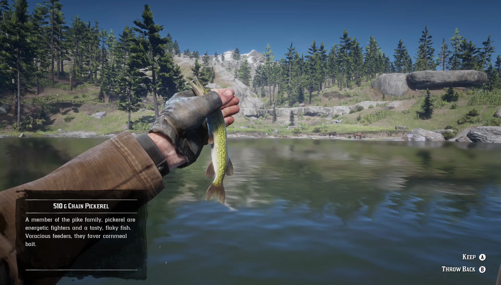

Chain Pickerel are a common sight in many of the country's lakes, rivers, and swamps. The Chain Pickerel is a small but energetic, predatory fish. It reportedly favors corn and other food baits. Chain Pickerel prefer sunny weather. Fishermen in Big Valley claim that a Legendary Chain Pickerel can be found some way downriver from Cumberland Falls.
Found in most lakes, rivers, and swamps.
